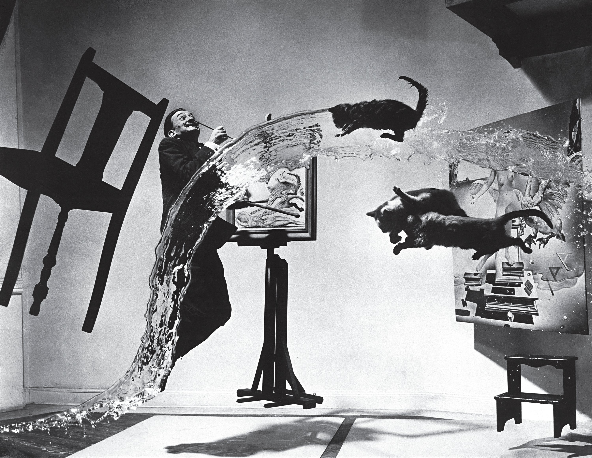
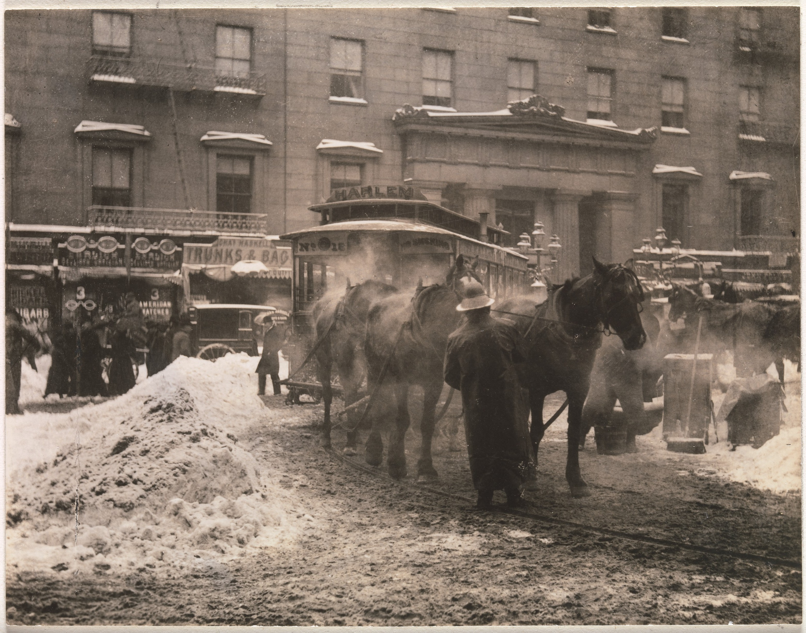

Photos
The Tetons and the Snake River, 1942

This is one of the most classic work of Ansel Adams' which shows vast view of mountains and river at the Grand Teton National Park in Wyoming. The photo conveys a spectacular view but also conserve every details from the dark cloud to the shimmering river. The cloud and the peak of the mountain is a little right off the center, but the bright, sharp turn of the river strikes a balance. The secret of the grand feeling also lies in the layering of brightness. At the furtherest side we see the brightest mountains, then we can see the dark cloud and dark mountains. At the bottom, there is a layer of white fog. Nearer is the bright river, and the nearest is the dark forest. It is also amazing to think about the difficulty of carrying all the equipment to the wildness and capture the extraordinary scene.
Dali Atomicus, 1948
.jpg){kind=link}
This is one of Philippe Halsman most famous photographs, Dali Atomicus, 1948. It apparently falls under both categories of portrait and surrealism. He used such surrealistic settings to reflect the unstrained mind flow of Dali when he was creating his abstract paintings. Dali is placed at one thirds of the picture. Everything in the picture is flying. The expression of Dali is exaggerated. The cats seem to be flying out of the painting. The whole picture seems fantastic and ridiculous. Viewers may think how Halsman achieved such effects in 1948 when there were no Photoshop technologies. It turns out that he used a realistic approach to create such a surrealistic scene. The paintings were hung by a steel wire. His five assistants held the chair, threw the cats, spilled the water at the same time as Dali jumped. He probably used very fast shutter speed like 1/2000 seconds to freeze the motion of water, jump and cats.
The Terminal, 1893
One of my favorite pictures of Alfred Stieglitz's is The Terminal, 1893. The picture is one of Stieglitz’s early works, but it is quite documentary and realistic already. The subject, the horses, are roughly at the one-third position of the picture, which makes the subject stand-out in a street photograph. The shutter speed is fast but not too fast because the horses are sharp but the people in the background are a little blurry. I guess between 1/60 to 1/100 seconds. I like how the surrounding is related to the subject in this picture. We could notice the hot steam from the horses which indicates it’s in a cold winter, and it is related with the dirty snow in the picture. I think the composition is simple but effective. It effectively conveys the booming vibe of America society at the time through the hot/cold contrast inside the photo.